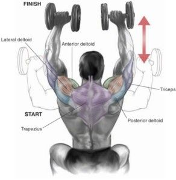

Welcome to Ejercicios efectivos para los hombros
5 ejercicios para fortalecer hombros y aliviar el dolor
2021.06.26 20:07Cardio Strength Nutrition Daily Habits Success Stories News Cardio Strength Nutrition Daily Habits Success Stories News Hacer ejercicio con el periodo: fitness, running y menstruación Ejercicios y consejos para el dolor en la espinilla adidas Running • Con qué relojes deportivos y apps funciona Ejercicios para entrenar con bandas de resistencia Hacer ejercicio con el periodo > > Entender las fases del ciclo menstrual Ejercicios de fuerza: 4 beneficios para el running Los beneficios de la fibra alimentaria para atletas Nutrición deportiva: qué comer antes, durante y después de correr Los beneficios del magnesio para deportistas Hacer ejercicio con el periodo > > Entender las fases del ciclo menstrual Recuperación muscular: cómo acelerarla con estos 8 consejos Deporte y sostenibilidad: ¿jogging o plogging? Volver a entrenar: recuperación pos-COVID-19 Motivación fitness • Puedo con todo -75 kg • De tener sobrepeso a correr una maratón Entrenamientos personalizados para hacer en casa Los empleados de Runtastic que cambiaron su vida en 2017 Runtastic para Apple Watch: ¡vuelve la segunda pantalla! Strength
5 ejercicios rápidos y efectivos para hombros
por adidas Runtastic Team | 07.06.2018 | 3 minutospor Viktoria Wolffhardt, piragüista de slalom
Para entrenar adecuadamente durante un proceso de recuperación de alguna lesión o incluso para calentar la parte superior del cuerpo antes de entrenar, no necesitas mucho tiempo ni un equipo último modelo si quieres fortalecer los hombros. La piragüista de slalom Viktoria Wolffhardt te propone cinco ejercicios que puedes realizar donde y cuando quieras.
1. Mejorar la estabilidad del hombro
Si utilizas la app adidas Training , seguramente ya conozcas el ejercicio “Up Down” (arriba y abajo). La posición inicial es una plancha baja y el movimiento consiste en tomar impulso y subir a una plancha alta. A continuación, vuelve a la plancha baja (posición inicial) y repite el ejercicio, alternando la mano con la que empiezas (la primera vez apóyate sobre la derecha para tomar impulso, la segunda vez con la izquierda, etc.). Cuando realices el “Up Down”, recuerda que lo más importante es asegurarse de trabajar correctamente el core y mantener las caderas lo más estables posible.
Repite el ejercicio entre diez y doce veces por cada lado (impulso con la mano derecha / izquierda) y haz un total de tres series .
Está bien saberlo:
“Este ejercicio también es una buena opción de calentamiento antes de hacer un entrenamiento que trabaje específicamente la parte superior del cuerpo”, explica Viktoria Wolffhardt.
2. Reforzar el manguito de los rotadores
Emplea una banda de resistencia para este ejercicio: coloca tus brazos separados el uno del otro, contra una pared y sujetando la banda (como en la imagen). Estira la banda de resistencia a ambos lados, al mismo tiempo que realizas círculos moviendo los hombros hacia un mismo lado. El ejercicio se puede realizar a diferentes alturas para estimular más los músculos.
Repite el ejercicio entre diez y doce veces por cada lado y haz un total de tres series .
3. Círculos con los brazos (utilizando peso)
Coloca los pies separados, a la misma altura que la cadera y sujeta un peso ligero (una botella de un litro, por ejemplo) en cada mano. En la posición inicial, los brazos deben estar a los lados, pegados al cuerpo. Sube los brazos lentamente, al mismo tiempo que realizas pequeños círculos, hasta que lleguen a una posición horizontal. Mantenlos arriba durante un corto tiempo y bájalos lentamente.
Repite el ejercicio entre diez y doce veces por cada lado , alternando entre círculos hacia adelante y círculos hacia atrás . Haz un total de tres series .
Cuidado:
“Presta atención a no arquear la parte inferior de la espalda: no adelantes la barbilla, así la espalda estará recta durante todo el ejercicio”.
4. Estabilización con una botella de agua
Llena de agua ¾ de una botella de litro y medio. Coge la botella con la mano derecha y estira el brazo hacia adelante. La mano tiene que quedar a la altura del hombro y el brazo tiene que estar bien estirado. Mantén el brazo en esta postura durante 30-60 segundos y, a continuación, cambia de lado para repetir el ejercicio. Realiza tres series por cada lado .
Beneficios del ejercicio:
“Este movimiento trabaja los grupos pequeños de músculos del hombro para aliviar el dolor en los tendones y las articulaciones. Es particularmente apropiado para las personas que se estén recuperando de una lesión en el hombro”.
5. Rotación interna y externa con la banda de resistencia
Ata la banda de resistencia al pomo de una puerta (o cualquier otro punto de anclaje parecido) y colócate de lado al pomo. Sujeta la banda con una mano (la que queda cerca de la banda) y tira de ella hasta que esté tensa. El brazo tiene que formar un ángulo de 90 grados y el codo tiene que quedar cerca del cuerpo. Mantén la posición del brazo y empieza a rotar el hombro de manera externa para que la mano se mueva hacia el pomo. A continuación, rota el hombro de forma interna, mandando la mano hacia el cuerpo y aumentando tensión con la banda. Si no te resulta fácil conseguirlo, prueba a reducir la tensión en la banda, acercándote un poco al pomo de la puerta.
Repite el ejercicio entre diez y doce veces por cada lado y haz un total de tres series .
El consejo de Viktoria:
“La pelvis tiene que estar estable y mirando hacia adelante: no deberías sentir ninguna rotación en la parte inferior del cuerpo ni en las caderas”.
¡Disfruta entrenando! No obstante, recuerda que si el dolor de los hombros no mejora, deberías consultar a un médico.
Sobre Viktoria Wolffhardt:
Viktoria Wolffhardt es piragüista de slalom desde hace 15 años. Esta joven atleta, vicecampeona mundial y dos veces ganadora del campeonato U-23, siempre anda en busca de nuevos retos. Su lema es: “¡Sé rápido, esfuérzate, disfruta y sé tú mismo!”.
***
CALIFICA ESTE ARTÍCULO
Calificación media
TAGS
Fitness Entrenamiento adidas Runtastic Team ¿Quieres perder algo de peso, ser más activo o mejorar la calidad de tu descanso? El equipo de adidas Runtastic te da consejos útiles y te inspira para que alcances tus metas. Ver todos los artículos de adidas Runtastic TeamTAGS
Fitness EntrenamientoLECTURAS IMPRESCINDIBLES
HIIT o circuito de entrenamiento – diferencias, ventajas y 3 entrenamientos Vuelve a ponerte las pilas con este plan (gratis y para todos los niveles)TAMBIÉN ESTAMOS AQUÍ
Síguenos
Facebook Instagram YouTube LinkedInAcerca de
Empleo Blog de tecnología Partner Prensa y Medios AyudaMás
Términos y condiciones Política de privacidad Legal Idioma English Deutsch Français Italiano Español Português © Copyright runtastic GmbH 2021COMPARTE ESTE ARTÍCULO
×Gracias por tu valoración, ¡nos alegra saber que te ha gustado el artículo! Compártelo para inspirar a tus amigos.
1 km = 10 botellas de plástico menos Participa en el reto Corre a favor de los océanos Participa en el reto CORRE A FAVOR DE LA DIVERSIDAD Participar